Lab Updates
NEWS
SLWS Field Survey in Mongolia Supports Long-term Forest Restoration
SLWS recently participated in a field survey in northern Mongolia. The fieldwork was conducted in a forest-steppe landscape to support a long-term forest restoration project. The team collected data on soil properties, biodiversity, biomass, water quality, and habitat conditions. The field experience provided valuable opportunities to connect GIS, ecology, and environmental research with real-world observations while gaining a deeper understanding of Mongolia’s unique landscapes and ecosystems.
研究室的成員們前往蒙古北部進行野外調查，調查內容涵蓋土壤、生物多樣性、生物量、水質與棲地條件等面向，評估不同條件下的森林種植潛力，為長期復森林計畫的建立基礎。
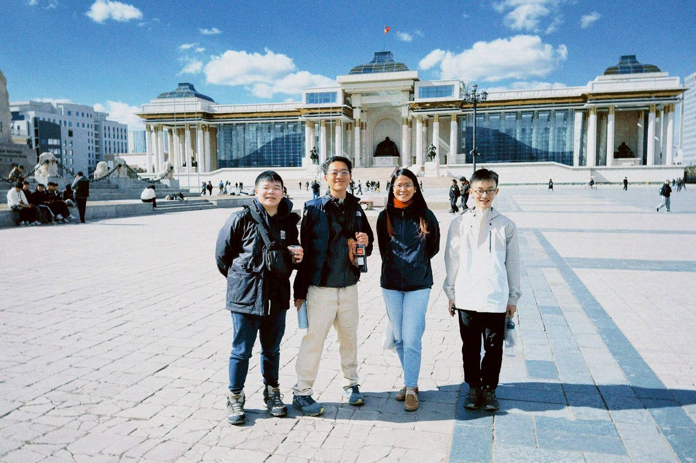
SLWS Research on Afforestation Climate Impact and Heat Mortality Featured at EGU
Research Assistant Yu-Hsiang Chang and Master's student Shao-Fang Li traveled to Vienna, Austria, for the European Geosciences Union General Assembly (EGU 2026). Yu-Hsiang presented on afforestation's climate impacts in Mongolia, and Shao-Fang discussed a quantitative model analyzing mortality risk from extreme temperatures in Taiwan.
本研究室助理張淯翔與碩士生李劭方於 2026 年 5 月前往奧地利維也納，參加 2026 歐洲地球科學聯盟年會（European Geosciences Union General Assembly）。EGU 年會是地球科學領域最具指標性與規模最大的國際會議之一，在為期 5 天的會議期間，匯聚了超過 2 萬名來自世界各地的專家學者，共同展示與交流最新的研究成果與技術發展。
本次會議中，兩人發表之研究皆由翁葳老師指導。張淯翔以 "Climate impacts from afforestation in temperate regions: a regional assessment in Mongolia" 為題進行口頭發表，探討溫帶地區造林於減緩全球暖化之氣候效應評估；李劭方則進行海報發表，主題為 "Adaptation to warming climate: analyzing minimum mortality temperature in Taiwan"，建立量化模型以探討臺灣極端氣溫事件與致死風險的關係。此次遠赴 EGU 發表的經驗，不僅提供了與國際研究者交流的寶貴機會，亦大幅拓展了學術視野。
Reference:
Chang, Y.-H. and Weng, W.: Climate impacts of afforestation in temperate regions: a regional assessment in Mongolia, EGU General Assembly 2026, Vienna, Austria, 3-8 May 2026, EGU26-17876, https://doi.org/10.5194/egusphere-egu26-17876, 2026.
Li, S.-F., Chen, Z.-F., and Weng, W.: Adaptation to warming climate: analyzing minimum mortality temperature in Taiwan, EGU General Assembly 2026, Vienna, Austria, 3-8 May 2026, EGU26-19441, https://doi.org/10.5194/egusphere-egu26-19441, 2026.
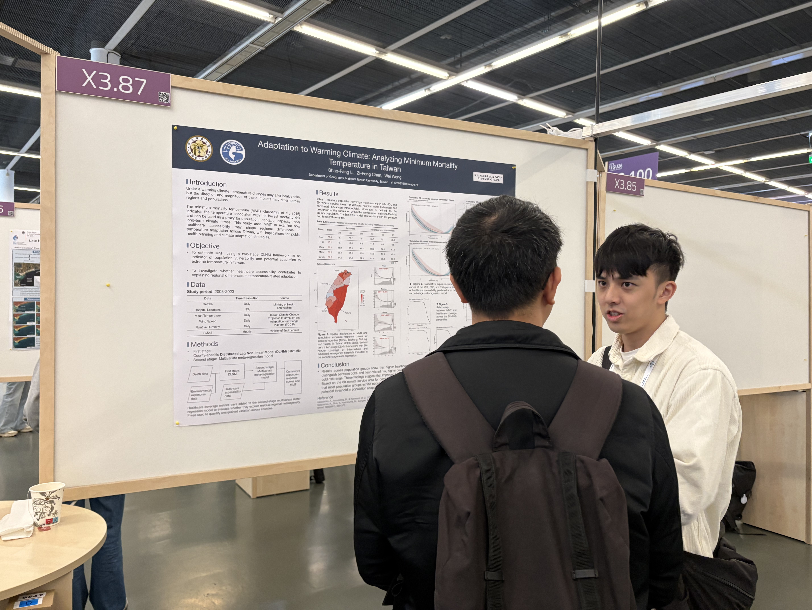

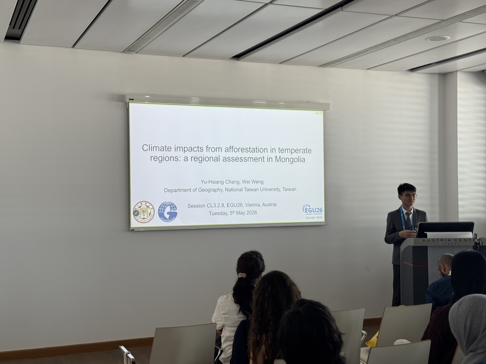
Yu-Chi Su Publishes Research on Social Housing and Carbon Emissions
Our undergraduate student, Yu-Chi Su, achieved a significant milestone with his article published in Liberty Times Net. His work analyzed Taiwan's social housing carbon emissions and policy, translating academic knowledge into public dialogue.
Read the article here: 減碳目標下的社宅調整爭議
本研究室大學部蘇昱齊同學研究臺灣社會住宅營建碳排放，提出我國總體營建碳排放之量化評估，並評析我國社宅政策目標。其所撰寫的〈減碳目標下的社宅調整爭議〉獲刊登於《自由評論網》
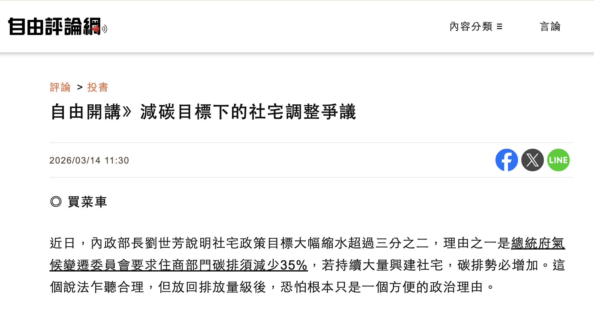
SLWS Brings Vibrant Spirit to the 2025 NTU Pride Parade
SLWS was once again a cheerful presence at NTU's Pride Parade. The lab's participation was a vibrant show of solidarity, affirming our commitment to a more diverse and inclusive campus environment.
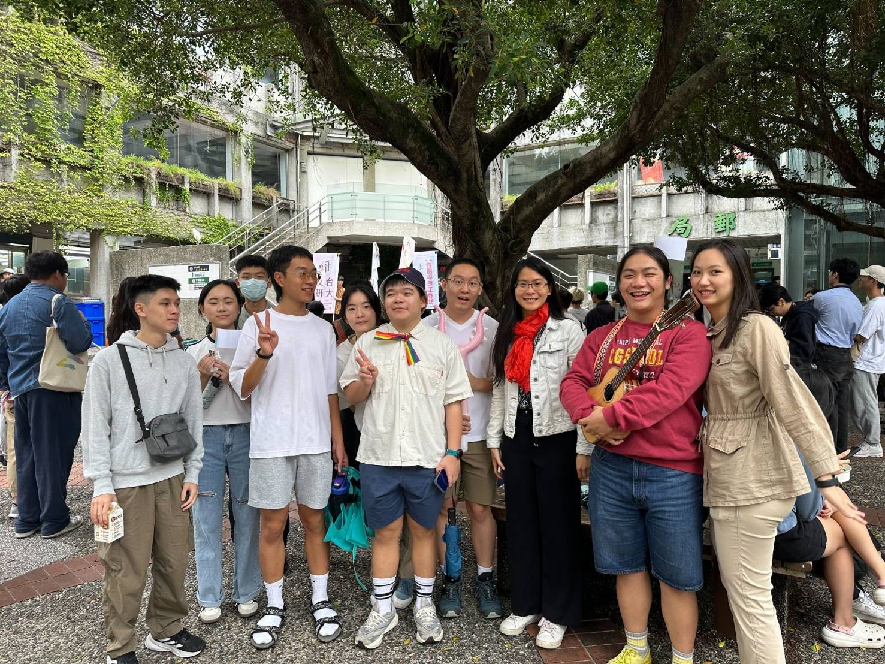
Prof. Wei Weng Honored with Prestigious International Chair at University of Rennes 2
The SLWS lab celebrates a moment of global recognition as Prof. Wei Weng received the distinguished Chaire internationale en sciences humaines et sociales (International Social Sciences and Humanities Chair) at the University of Rennes 2 in France. Prof. Weng will use this opportunity to connect the lab with resources and expertise from around the world.
翁葳老師於 2025 年十月，獲法國雷恩第二大學國際社會人文講座。
A New Chapter of Excellence: Celebrating Ping Fu's Journey to UTokyo for Graduate Studies
It is with immense pride that we announce Ping Fu's next academic milestone. He has been awarded a full scholarship to begin his Master's program at the University of Tokyo in October 2025. We are thrilled to celebrate this incredible achievement and send our warmest wishes for great success on this academic journey.
賀！本研究室助理傅平將於 2025 年 10 月啟程前往日本東京大學攻讀碩士學位。在此，我們衷心祝福傅平在新的學術旅程中取得卓越成就。
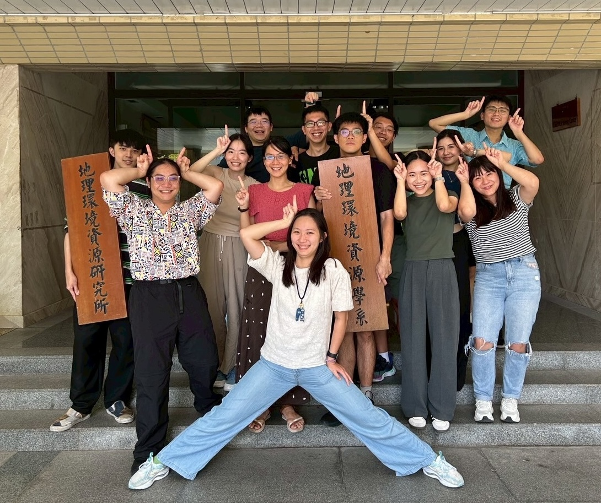
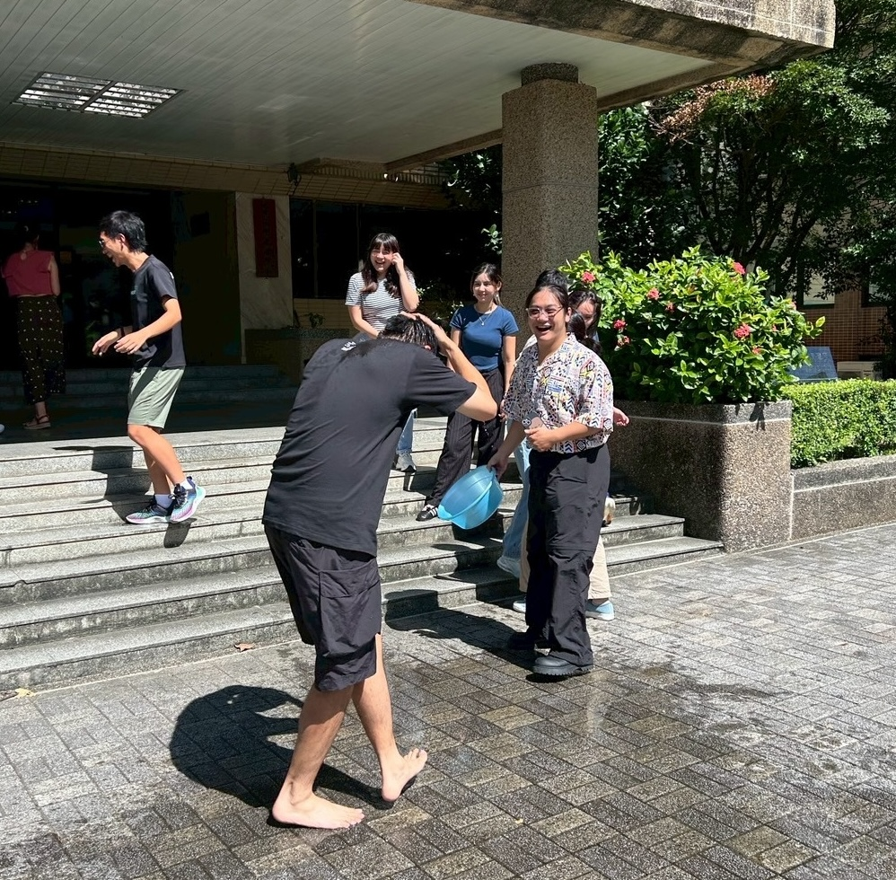
Hao-Ren Shiau Delivers Research on Amazon Water Livelihoods in Birmingham
In August 2025, our research assistant Hao-Ren Shiau delivered an oral presentation at the RGS-IBG Annual International Conference. His research, supervised by Prof. Wei Weng and titled "Not Just Numbers: Water-Based Livelihood in a Deforested Amazonian Landscape," analyzed household survey data and discussed how local Amazonian communities manage essential water-based livelihoods while confronting severe hydroclimate events.
本研究室助理蕭浩任於 2025 年 8 月前往英國伯明罕，於皇家地理學會年度國際會議（RGS-IBG Annual International Conference 2025）進行口頭發表。該研究由翁葳老師指導，題目為 Not Just Numbers: Water-Based Livelihood in a Deforested Amazonian Landscape，研究透過分析家戶調查資料，探討在地以水為基礎的生活，其挑戰與永續解方。
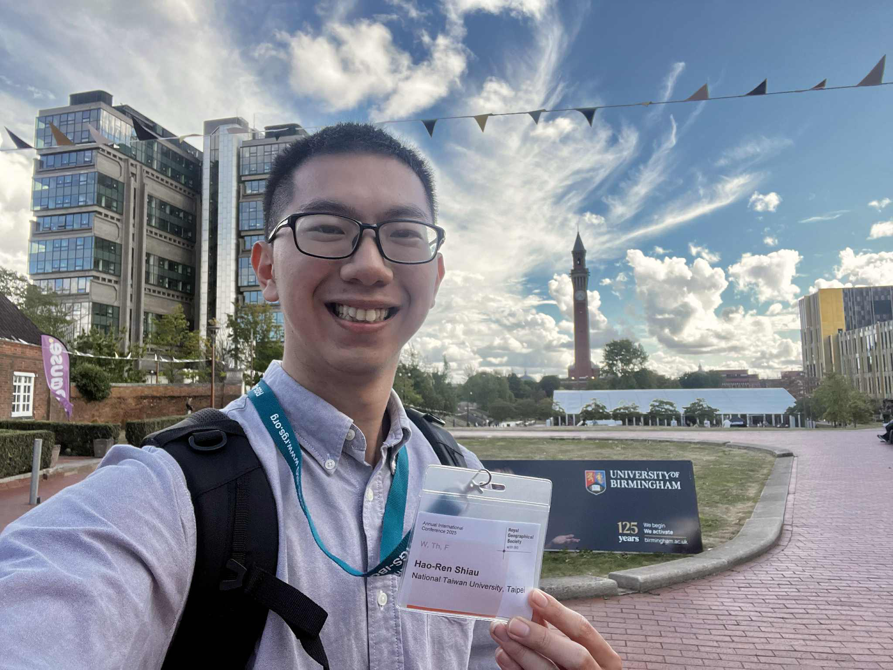
Meet Our Brilliant Visiting Students Zoran and Jordi
This summer, the SLWS lab was energized by the arrival of two visiting students, Zoran and Jordi. Zoran, joining us from the United States, immersed himself in the critical "Heat Adaptation and Urban Infrastructure" project. Complementing this, Jordi traveled all the way from Catalonia to lend his skills to the research on "Amazon Wildfires and Public Health." Their dedicated work and global insights brought a vibrant dynamic into the lab.
歡迎 Zoran 與 Jordi 來到 SLWS 訪問！
來自美國的 Zoran 參與「熱適應與城市基礎建設」計畫；來自加泰隆尼亞的 Jordi 則投入「亞馬遜野火與公共衛生」研究，為研究室的暑期生活帶來新活力。
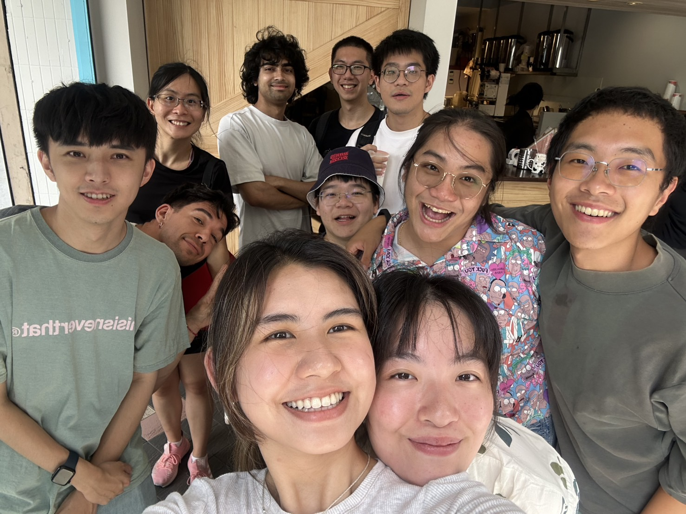
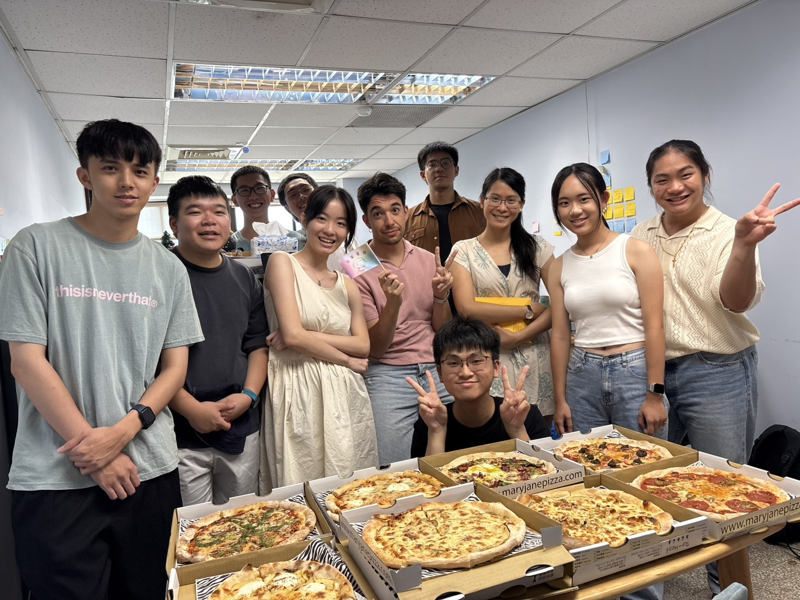
Cheer for the Scorching Summer! SLWS Gather for Karaoke and Fun
What better way to welcome summer than with cheer, good drinks, and some excellent karaoke! The SLWS summer gathering provided a perfect break for everyone to relax and recharge.
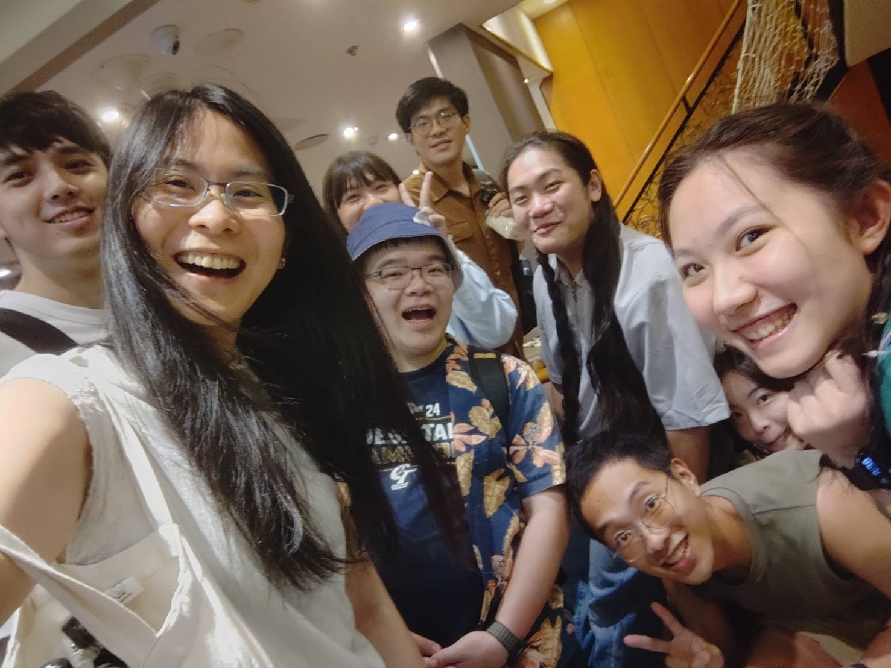
Celebrating Bachelor's Graduates Hao-Jen Shiau and Zi-Feng Chen
We proudly congratulate two SLWS members, Hao-Jen Shiau and Zi-Feng Chen, on the completion of their bachelor's degrees! Zi-Feng was recognized this year with the Bachelor’s Thesis Award for his exceptional academic work. Hao-Jen is currently working to convert his research on Amazonian Water Livelihood into a journal article for publication. We celebrate their hard work and wish them the best of luck as they step into their future academic endeavors.
恭喜兩位優秀的研究室成員蕭浩任與陳子峯同學順利完成學士學位！陳子峯同學在乾旱與農業用水調度的研究榮獲了今年學士班畢業論文獎，蕭浩任同學也正在將他有關亞馬遜地區的用水研究撰寫成期刊文章準備投稿。祝福他們在未來的學術或職涯旅程中一切順利！
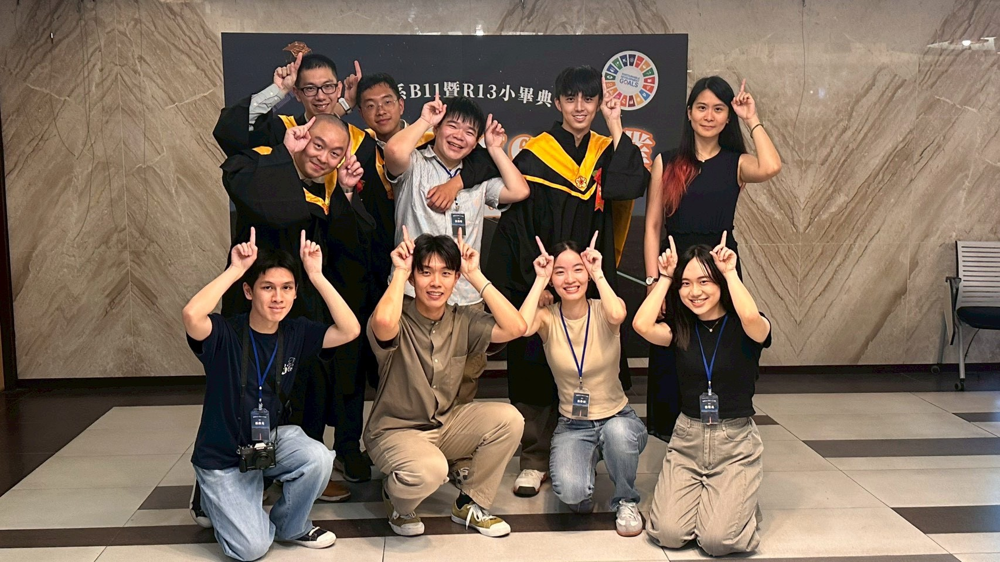
SLWS Celebrates Bachelor's Graduates Eru Chiang and Chen-Wei Ho
We proudly celebrate the graduation of two dedicated SLWS members from the Class of 2025: Eru Chiang and Chen-Wei Ho. Research team members were present at the ceremony to offer their warmest blessings. We wish them every success and fulfillment as they embark on their exciting future careers.
恭喜 SLWS 兩位畢業生姜一如、何震瑋完成學士學位，祝福他們在未來的生涯發展一帆風順！
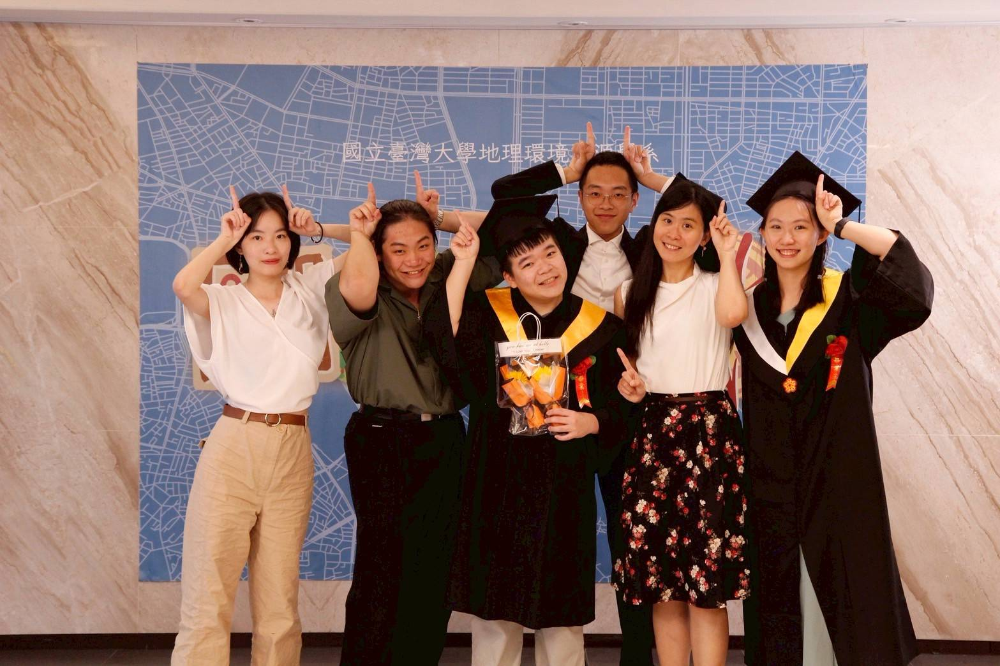
Several New Research Themes shared at SLWS Semester Highlight Meeting
SLWS members presented their research and learning progress at the semester meeting. Discussion topics included agricultural production under drought events, wildfires and public health, data modeling for heat adaptation, aerial river research and data models, and urbanization and food supply. Prof. Wei Weng concluded the meeting by commending everyone's hard work, noting that it is inspiring to see the lab actively developing in various research fields.
SLWS 成員於學期成果報告中分享各自的研究與學習進度，討論主題包含乾旱事件下的農業生產、野火與公共衛生、熱適應資料建模、空中河流研究與資料模型，以及都市化與糧食供應。翁葳老師並於會末肯定大家的努力，表示看見研究室在各個研究領域持續拓展，令人相當欣慰。
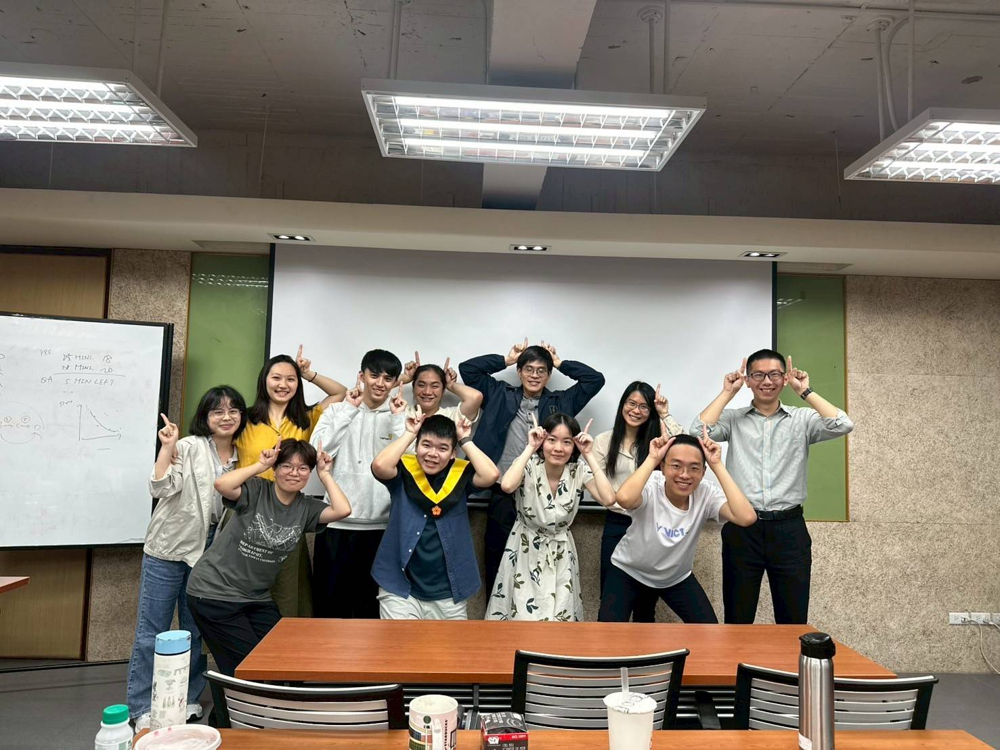
SLWS Rings in the Lunar New Year and Reviews a Year of Progress
Our annual Spring Banquet has been a cultural tradition marking the Lunar New Year. The gathering served as a time to celebrate the New Year, clean the lab, and look back on the previous year's work and progress. We exchanged wishes and looked ahead to another year of success in study and research.
令人期待已久的春酒，SLWS 的成員開開心心齊聚 508 室，期許新的一年大家能夠在學業和研究更上一層樓！
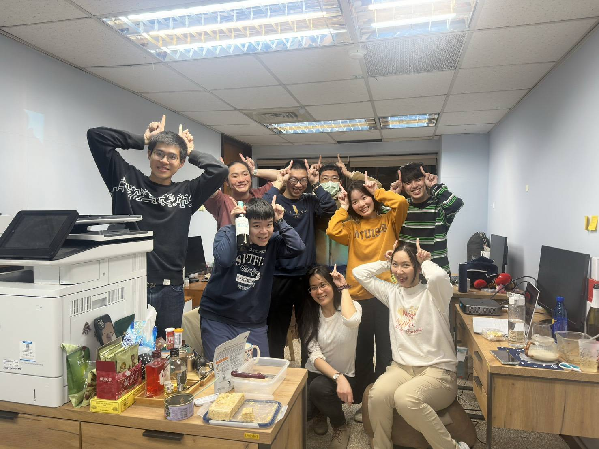
ESG Course Returns for Fall 2024, Connecting Sustainability Industry Pioneers with Students
Prof. Wei Weng offered the "ESG Introduction and Practical Training Course" again. In addition to introducing core ESG concepts, the course invited industry instructors to guide students through integrated exercises that connected key sustainability issues with classroom learning. We thank the many students who participated enthusiastically as we advanced together on the path toward sustainability.
翁葳老師再度開設「ESG 簡介與實務訓練課程」，除了簡介 ESG 的基本概念，專案更邀請業界老師蒞臨指導，學習將關鍵議題與課堂知識所學進行整合演練。感謝數十位同學的熱情參與，一起在永續的路上前行！
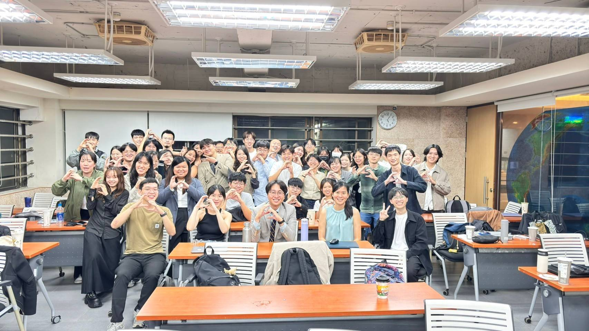
SLWS Celebrates NTU Pride Parade for Building an Inclusive Campus
SLWS proudly joined the 2024 NTU Pride Parade, demonstrating our commitment to diversity under the inspiring theme, "Super Heterogeneous++ Connections."
SLWS 組團參加 2024 年臺大同志遊行「超異質++連結」，支持為更加平等的社會與校園而行！
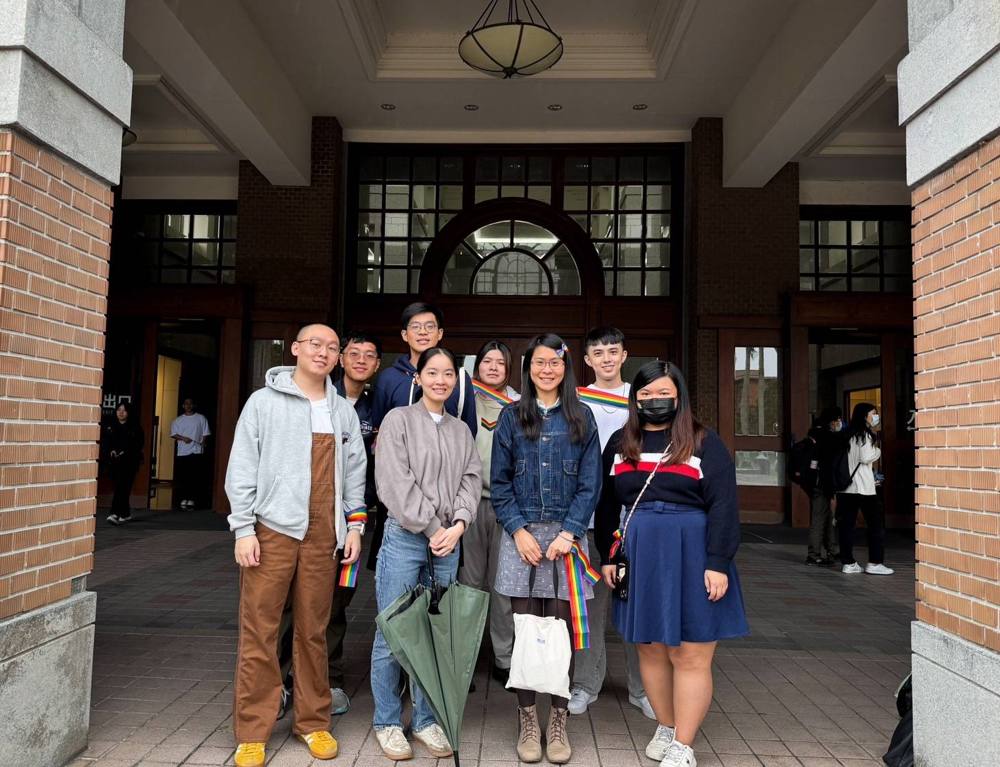
Energy Workshop
- Morning Session 9:00-12:00 (Mandarin)
- 09:00-09:40 | Jing-Wen Huang, Renewables Consulting Group (RCG)
Practical Issues in Taiwan's Energy Transition - 09:40-10:20 | Mi-Lan Chen, Tamkang University
Taiwan Can Help? Mapping the Politics of Net Zero - 10:20-11:00 | Chung, Taiwan Power Research Institute
Introduction of Decarbonization Plans for Electric Power Suppliers - 11:00-12:00 | Panel Discussion
- 09:00-09:40 | Jing-Wen Huang, Renewables Consulting Group (RCG)
- Lunch 12:00-13:00 Boxed meals provided on site
- Afternoon Session 13:00-16:00 (English)
- 13:00-13:40 | Luís Costa, Potsdam Institute for Climate Impact Research
Co-designing an integrated energy model to support the rapid appraisal of decarbonization options: Challenges and applications - 13:40-14:20 | Shu-Yuan Pan, Bioenvironmental Systems Engineering, NTU
The role of circular economy in carbon-neutral energy toward a carbon-negative scheme - 14:20-15:00 | Ke-Hsuan Chien, Institute of Technology Management, NTHU
Translating energy transition differently: Policy-making, supply chain restructuring, and infrastructural reconfiguration - 15:00-16:00 | Panel Discussion
- 13:00-13:40 | Luís Costa, Potsdam Institute for Climate Impact Research
20 Nov 2022, 9:00-16:00
Venue: Room Geo 1, Department of Geography and Environment Resources, National Taiwan University
Organizer: NTU Department of Geography and Prof. Wei Weng's Lab
Registration: NTU Geography Energy Workshop Registration Form
Program
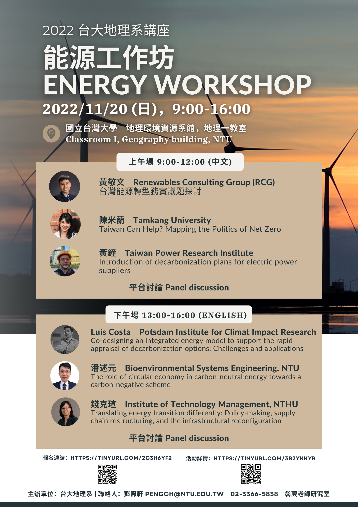
SLWS Welcomes Dr. Luís Costa for Collaborative Research on Heat Adaptation
Senior Scientist, Potsdam Institute for Climate Impact Research
19 Nov 2022
Room: R507, Department of Geography and Environment Resources Building, National Taiwan University
The SLWS lab was honored to host Senior Scientist Dr. Luís Costa from the Potsdam Institute for Climate Impact Research. During his two-week visit at the Department of Geography, NTU, Dr. Costa engaged in critical collaboration with our team. He also delivered a public lecture at Academia Sinica titled, "Towards a global model of human adaptation to heat stress," sharing crucial insights into one of the world's most pressing climate challenges. Seminar Link
Prof. Wei Weng Delivers Future Earth Online Lecture on Nature-based Climate Solutions
Prof. Wei Weng was invited to deliver a key online lecture for Future Earth. Her talk, titled "Nature-based Solutions as a Win-win between Climate and Water Goals: Aerial River Management for Future Water," illustrated nature-based solutions that address climate change resilience and water management.
翁葳老師於 Future Earth 發表線上演講。
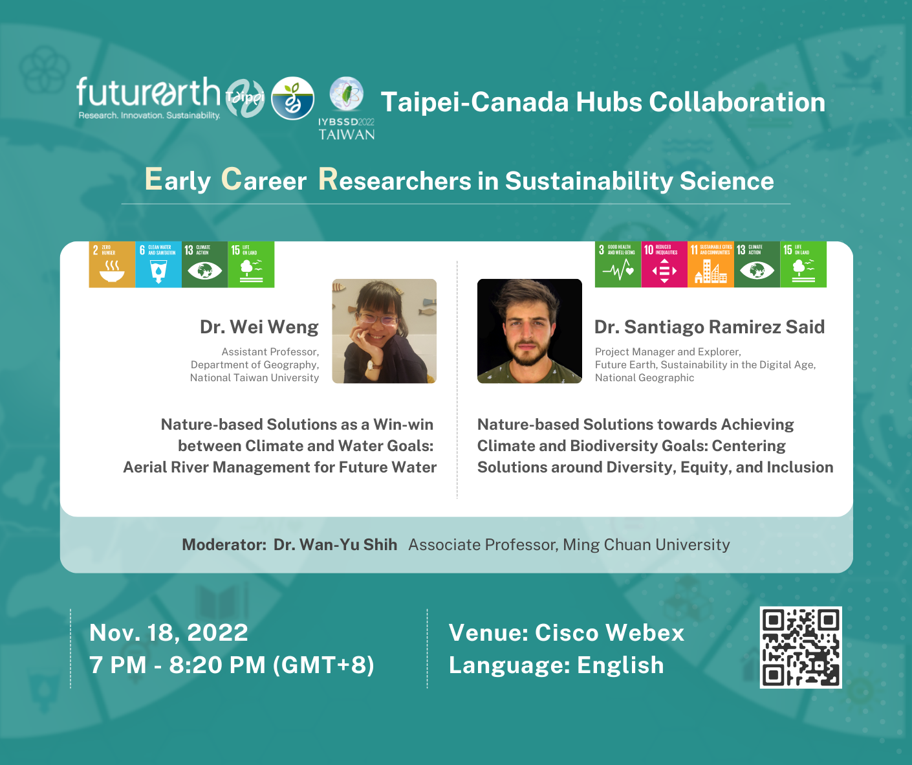